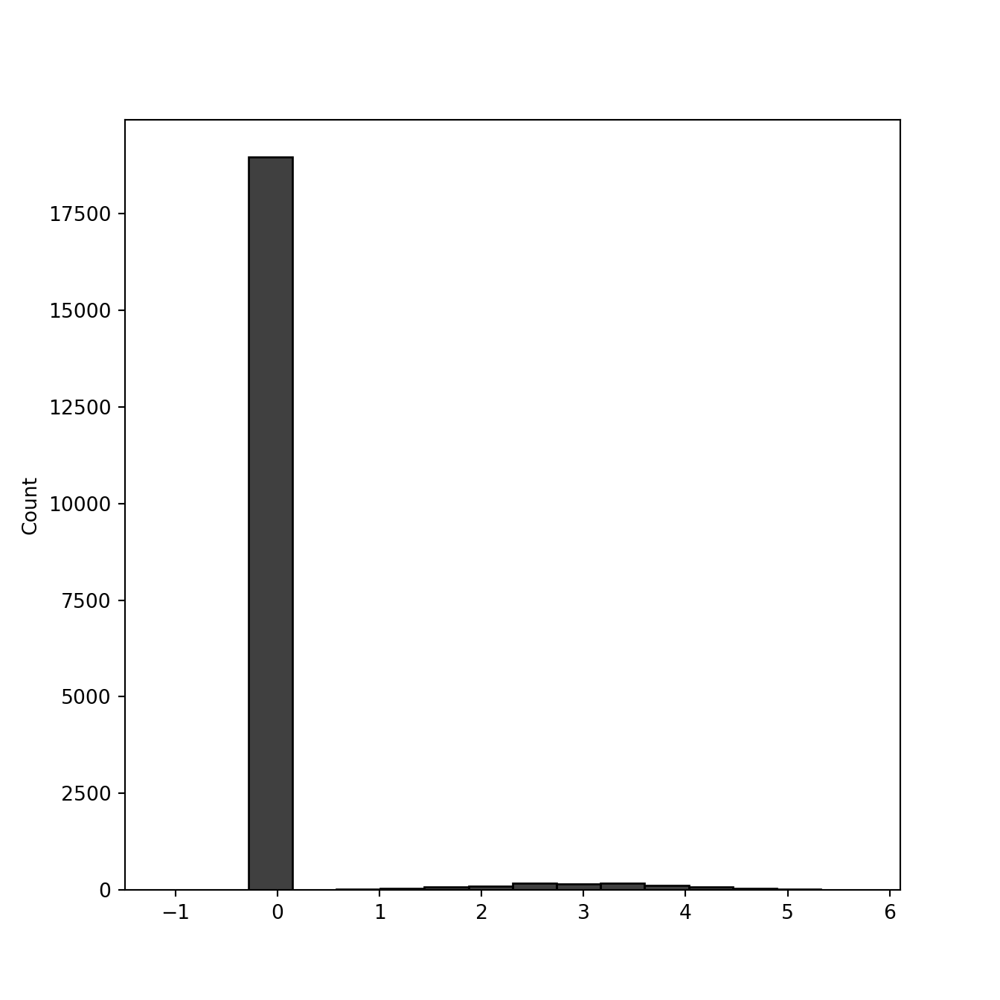
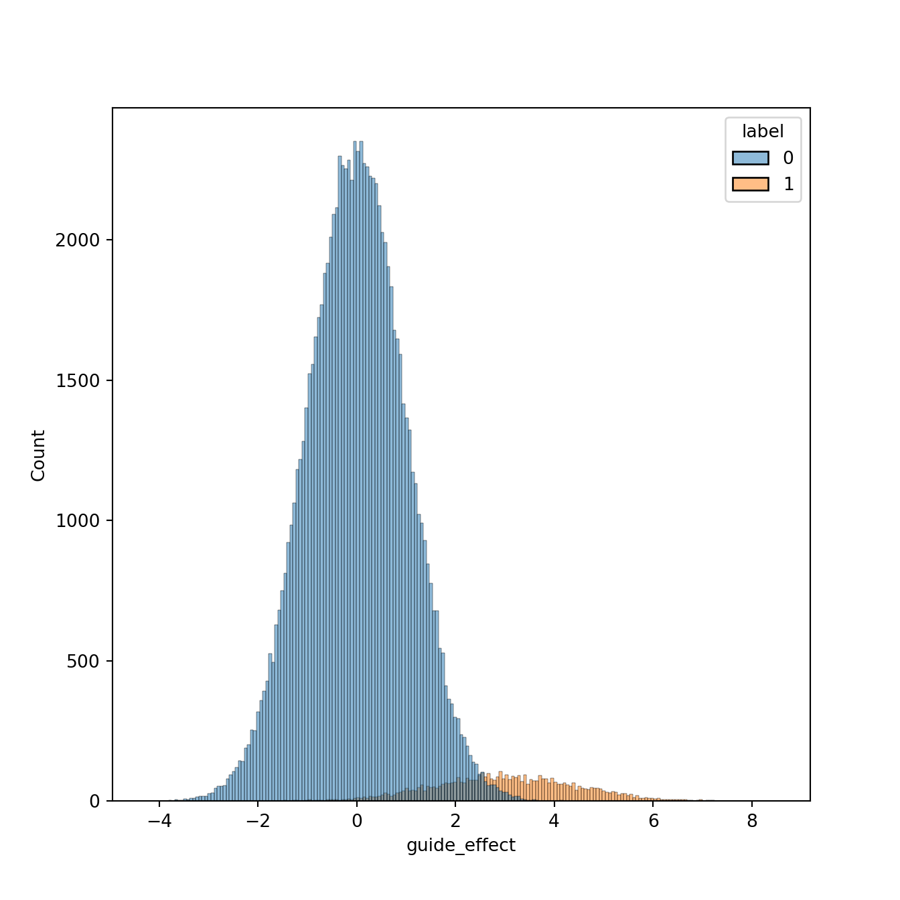
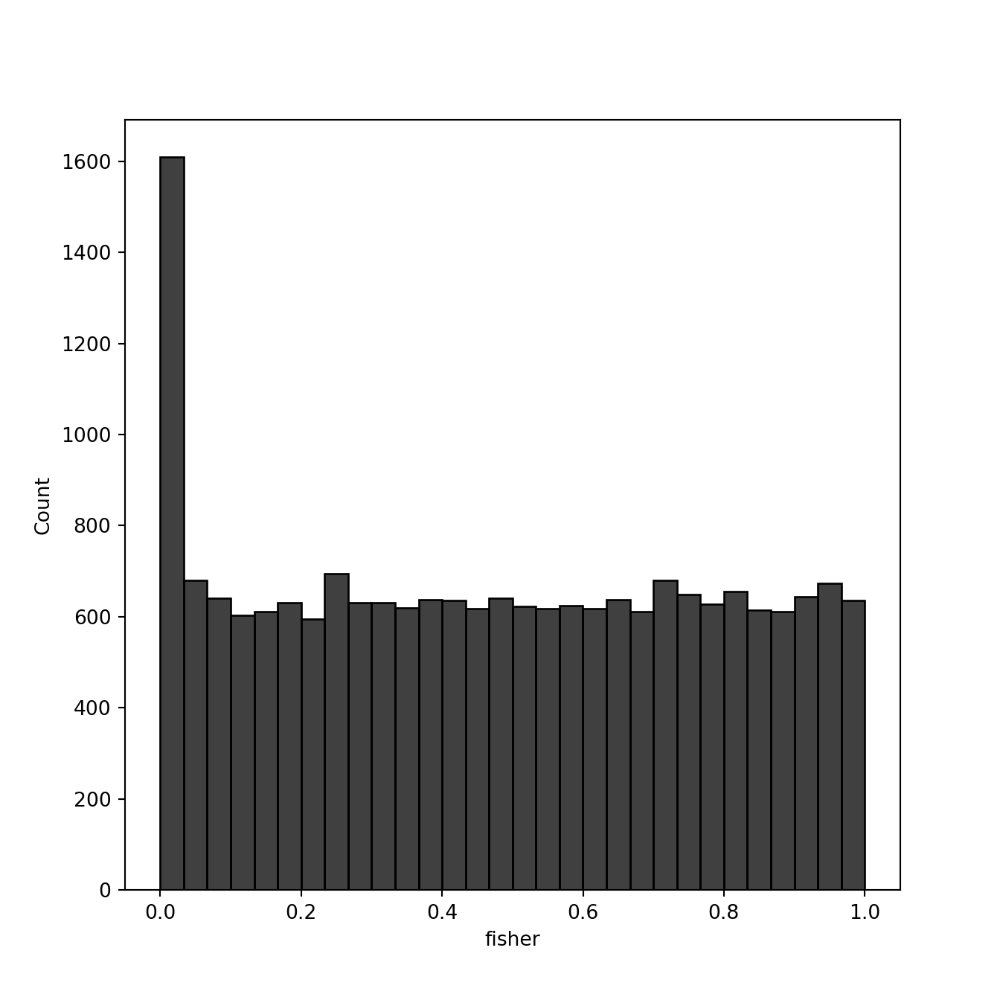
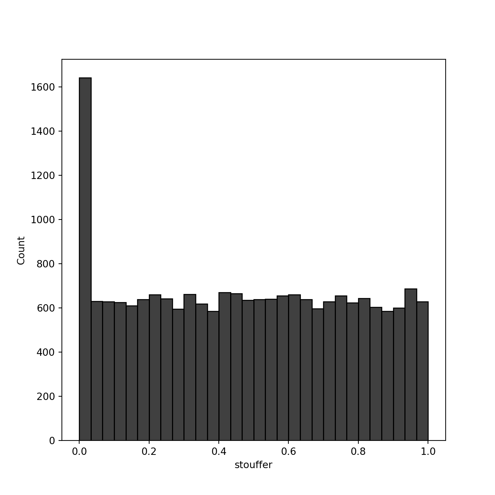
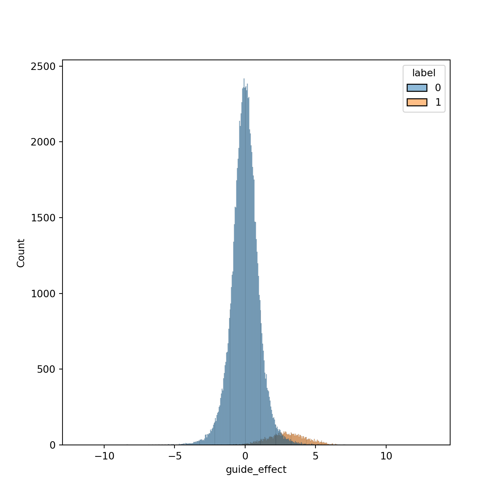
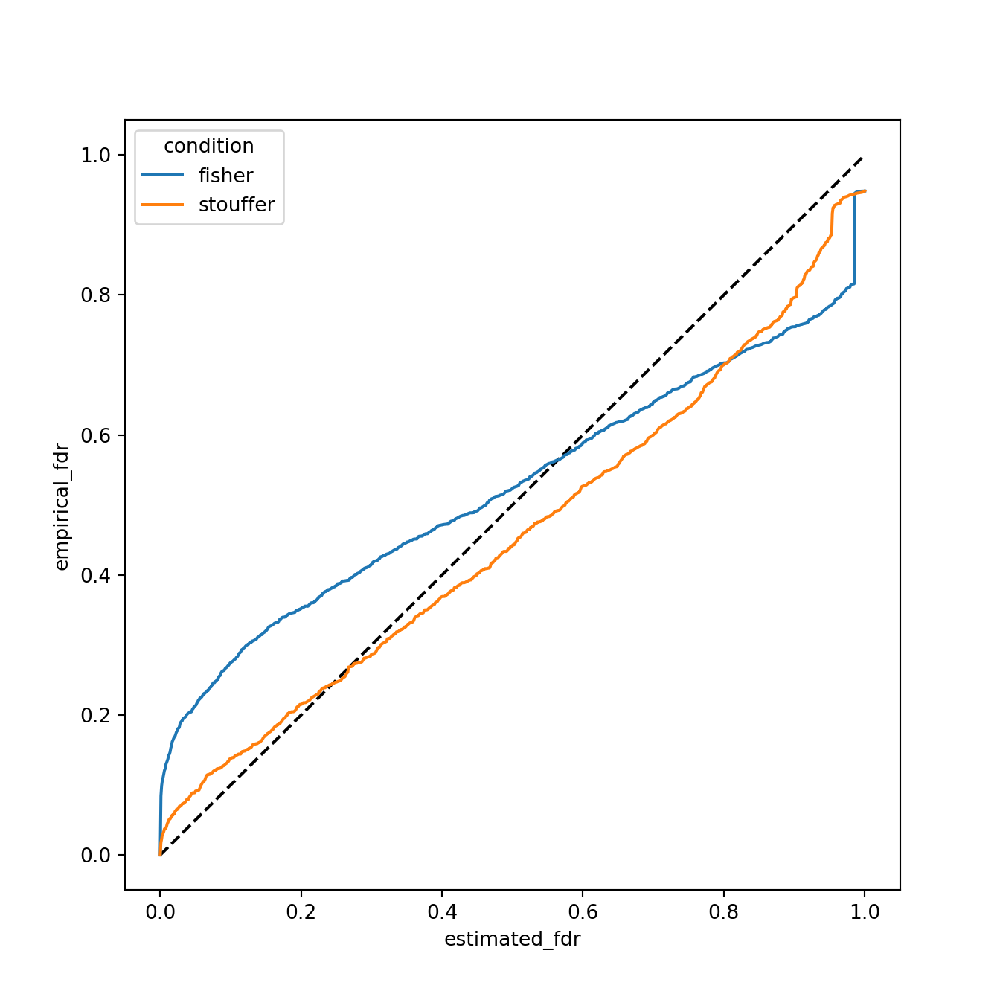
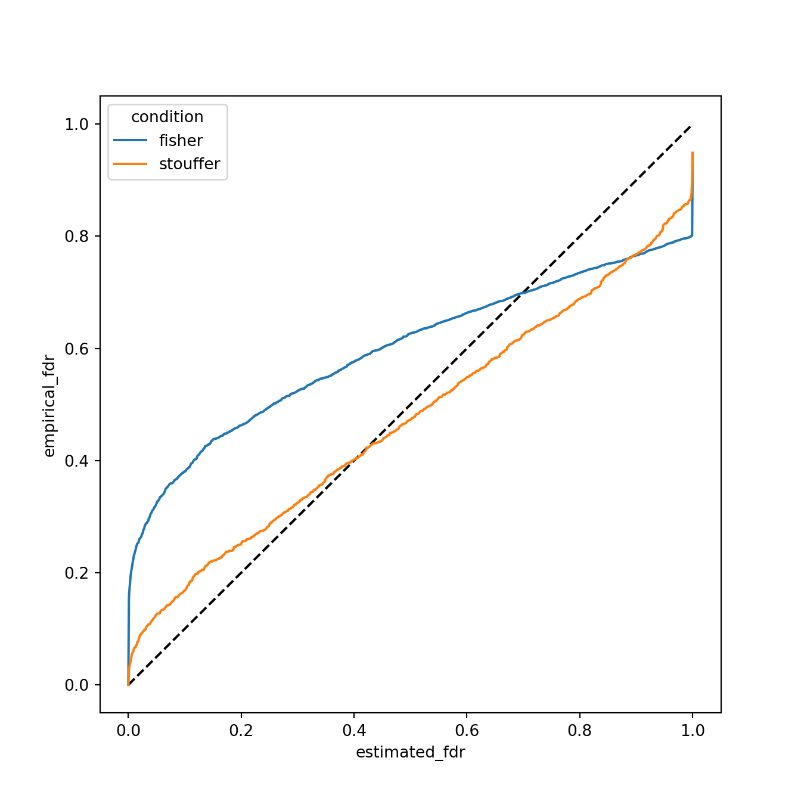

The most common way to coalesce \(p\)-values is Fisher’s method (https://en.wikipedia.org/wiki/Fisher%27s_method). For \(p\)-values \(p_{1}, \ldots, p_{n}\), Fisher’s method calculates the combined test statistic as \[ t_{\text{Fisher}} = -2 \sum_{i = 1}^{n} \log p_{i}. \] Under the null that the \(p\)-values are independent uniformly distributed, the \(t_{\text{Fisher}}\) will be \(\chi^{2}_{2n}\) distributed. The common wisdom is that Fisher’s method tend to values low p-values instead of consistent values.
An alternative to Fisher’s method is Stouffer’s method. The idea is to transform the \(p\)-values to \(z\)-scores, then compute a combined \(z\)-score from the individual \(z\)-scores. E.g. if \(\Phi(\cdot)\) is the standard normal cdf, then the test statistic is \[ t_{\text{Stouffer}} = \frac{1}{\sqrt{k}} \sum_{i = 1}^{n} \Phi^{-1} (p_{i}). \] Under the null this is distributed as a negative standard normal variable (negative because \(\Phi^{-1}\) of small \(p\)-values will be less than zero). The prevailing wisdom is that this method values consistently small \(p\)-values. To ensure that effects have the same sign, we can define \[ t_{\text{Stouffer}} = \frac{1}{\sqrt{k}} \sum_{i = 1}^{n} \text{sign}(x_{i}) \Phi^{-1} (p_{i}) \] as the test statistic so that effect sizes (\(x_{i}\)) of the same sign are valued. This has a null distribution of standard normal.
Let’s take a look at how the two methods compare when in the presence of long tails in the null. I expect that Fisher’s method will have higher false positive in the presence of long tails.
The simulation I’ll run is the standard 2-groups model. For aggregation purposes, we’ll have 5 effect sizes to merge. In real applications, the individual effect sizes and \(p\)-values arise from differential expression analysis of guide RNAs, with aggregation done at the gene level (as guide RNAs target specific genes).
library(reticulate)
# you need to edit RETICULATE_PYTHON in .Renviron
# for some reason I need to make a venv for each project
Sys.setenv(RETICULATE_PYTHON = "/Users/tim.daley/blog/FisherVsStouffer/venv/bin/python3")
use_python('/Users/tim.daley/blog/FisherVsStouffer/venv/bin/python3')
#reticulate::py_config()import numpy as np
# set seed
np.random.seed(12345)
n_genes = 20000
# 2% of genes are non-null
p = 0.05
gene_labels = np.random.binomial(n = 1, p = p, size = (n_genes, ))
print("number of genes: ", n_genes)## number of genes: 20000print("number of non-null genes: ", sum(gene_labels))## number of non-null genes: 1029For the small-tailed case, let’s assume that null gene-effects are equal to \(0\) and the non-null gene effects are distributed \(\mathcal{N}(3, 1)\).
import seaborn
gene_effects = gene_labels*np.random.normal(loc = 3, scale = 1, size = (n_genes, ))
seaborn.histplot(gene_effects, color = 'black')
You can see the long tail on the right is the gene effects. Now let’s assume 5 observations (guide RNAs) per gene. These are gonna be normally distributed with mean equal to gene effect size, and standard deviation 1.
import itertools
lst = range(n_genes)
guide2gene_map = list(itertools.chain.from_iterable(itertools.repeat(x, 5) for x in lst))
n_guides = 5*n_genes
assert(len(guide2gene_map) == n_guides)import pandas as pd
guide_effects = pd.DataFrame({'guide2gene': guide2gene_map})
guide_effects['guide_effect'] = guide_effects['guide2gene'].map(lambda i: np.random.normal(loc = gene_effects[i], scale = 1))
guide_effects['label'] = guide_effects['guide2gene'].map(lambda i: gene_labels[i])
seaborn.histplot(x = 'guide_effect', hue = 'label', data = guide_effects)
Now let’s look at combining \(p\)-values with Fisher vs Stouffer.
from scipy.stats import norm, chi2
from math import sqrt
def stouffer_pval(z):
stouffer_zval = sum(z)/sqrt(len(z))
stouffer_pval = 2*norm.cdf(-np.abs(stouffer_zval))
return stouffer_pval
def fisher_pval(z):
pvals = 2*norm.cdf(-np.abs(z))
fisher_val = -2*sum(np.log(pvals))
fisher_pval = 1.0 - chi2.cdf(fisher_val, df = 2*len(z))
return fisher_pval
gene_pvals = pd.DataFrame({'gene': range(n_genes),
'gene_label': gene_labels})
gene_pvals['fisher'] = gene_pvals['gene'].map(lambda i: fisher_pval(guide_effects[guide_effects['guide2gene'] == gene_pvals['gene'][i]]['guide_effect']))
gene_pvals['stouffer'] = gene_pvals['gene'].map(lambda i: stouffer_pval(guide_effects[guide_effects['guide2gene'] == gene_pvals['gene'][i]]['guide_effect']))
gene_pvals.head()## gene gene_label fisher stouffer
## 0 0 0 0.830681 0.982527
## 1 1 0 0.478896 0.263388
## 2 2 0 0.855862 0.759923
## 3 3 0 0.305149 0.892668
## 4 4 0 0.241290 0.915233import matplotlib.pyplot as plt
seaborn.histplot(gene_pvals['fisher'], bins = 30, color = 'black', label = 'Fisher p-vals')
plt.show()
seaborn.histplot(gene_pvals['stouffer'], bins = 30, color = 'black', label = 'Stouffer p-vals')
plt.show()
Now let’s compute Benjamini-Hochberg FDRs and compare them to the empirical FDR.
from statsmodels.stats.multitest import fdrcorrection
_, gene_pvals['fisher_fdr'] = fdrcorrection(gene_pvals['fisher'], method = 'indep')
_, gene_pvals['stouffer_fdr'] = fdrcorrection(gene_pvals['stouffer'], method = 'indep')
gene_pvals.head()## gene gene_label fisher stouffer fisher_fdr stouffer_fdr
## 0 0 0 0.830681 0.982527 0.990509 0.998450
## 1 1 0 0.478896 0.263388 0.951452 0.874023
## 2 2 0 0.855862 0.759923 0.992492 0.980158
## 3 3 0 0.305149 0.892668 0.900992 0.994393
## 4 4 0 0.241290 0.915233 0.872839 0.996570Now let’s compute the empirical FDRs.
def compute_empirical_fdr(labels, fdrs, fdr_thresh):
mask = (fdrs < fdr_thresh)
R = np.sum(mask)
if R > 0:
return np.sum(1 - labels[mask])/float(R)
else:
return 0
empirical_fdr = pd.DataFrame({'fdr_thresh': np.linspace(0, 1, num = 1000)})
empirical_fdr['fisher'] = empirical_fdr['fdr_thresh'].map(lambda x: compute_empirical_fdr(gene_pvals['gene_label'], gene_pvals['fisher_fdr'], x))
empirical_fdr['stouffer'] = empirical_fdr['fdr_thresh'].map(lambda x: compute_empirical_fdr(gene_pvals['gene_label'], gene_pvals['stouffer_fdr'], x))
empirical_fdr.head()## fdr_thresh fisher stouffer
## 0 0.000000 0.000000 0.000000
## 1 0.001001 0.000000 0.002281
## 2 0.002002 0.001220 0.003356
## 3 0.003003 0.002392 0.005507
## 4 0.004004 0.004739 0.008734empirical_fdr.tail()## fdr_thresh fisher stouffer
## 995 0.995996 0.942669 0.943560
## 996 0.996997 0.942908 0.944636
## 997 0.997998 0.947814 0.947671
## 998 0.998999 0.948307 0.948263
## 999 1.000000 0.948550 0.948550df = pd.DataFrame({'estimated_fdr': empirical_fdr['fdr_thresh'].tolist() + empirical_fdr['fdr_thresh'].tolist(),
'empirical_fdr': empirical_fdr['fisher'].tolist() + empirical_fdr['stouffer'].tolist(),
'condition': ['fisher']*empirical_fdr.shape[0] + ['stouffer']*empirical_fdr.shape[0]})
plt.plot([0, 1], [0, 1], '--', color = 'black')## [<matplotlib.lines.Line2D object at 0x7fd949e0c4f0>]seaborn.lineplot(x = 'estimated_fdr', y = 'empirical_fdr', hue = 'condition', data = df)## <AxesSubplot:xlabel='estimated_fdr', ylabel='empirical_fdr'>plt.show()
Now what happens if the null is a long-tailed distribution? We’ll use a t-distribution with a finite variance as the long tailed, and we’ll normalize it so that the standard deviation is equal to 1.
import pandas as pd
from math import sqrt
long_tailed_guide_effects = pd.DataFrame({'guide2gene': guide2gene_map})
deg_fred = 5
sd = sqrt(deg_fred/float(deg_fred - 2))
# divide by sd to normalize
long_tailed_guide_effects['guide_effect'] = long_tailed_guide_effects['guide2gene'].map(lambda i: gene_effects[i] + np.random.standard_t(df = deg_fred)/sd)
long_tailed_guide_effects['label'] = long_tailed_guide_effects['guide2gene'].map(lambda i: gene_labels[i])
seaborn.histplot(x = 'guide_effect', hue = 'label', data = long_tailed_guide_effects)## <AxesSubplot:xlabel='guide_effect', ylabel='Count'>plt.show()
long_tailed_gene_pvals = pd.DataFrame({'gene': range(n_genes),
'gene_label': gene_labels})
long_tailed_gene_pvals['fisher'] = long_tailed_gene_pvals['gene'].map(lambda i: fisher_pval(long_tailed_guide_effects[long_tailed_guide_effects['guide2gene'] == long_tailed_gene_pvals['gene'][i]]['guide_effect']))
long_tailed_gene_pvals['stouffer'] = long_tailed_gene_pvals['gene'].map(lambda i: stouffer_pval(long_tailed_guide_effects[long_tailed_guide_effects['guide2gene'] == long_tailed_gene_pvals['gene'][i]]['guide_effect']))
_, long_tailed_gene_pvals['fisher_fdr'] = fdrcorrection(long_tailed_gene_pvals['fisher'], method = 'indep')
_, long_tailed_gene_pvals['stouffer_fdr'] = fdrcorrection(long_tailed_gene_pvals['stouffer'], method = 'indep')
long_tailed_empirical_fdr = pd.DataFrame({'fdr_thresh': np.linspace(0, 1, num = 1000)})
long_tailed_empirical_fdr['fisher'] = long_tailed_empirical_fdr['fdr_thresh'].map(lambda x: compute_empirical_fdr(long_tailed_gene_pvals['gene_label'], long_tailed_gene_pvals['fisher_fdr'], x))
long_tailed_empirical_fdr['stouffer'] = long_tailed_empirical_fdr['fdr_thresh'].map(lambda x: compute_empirical_fdr(long_tailed_gene_pvals['gene_label'], long_tailed_gene_pvals['stouffer_fdr'], x))
df = pd.DataFrame({'estimated_fdr': long_tailed_empirical_fdr['fdr_thresh'].tolist() + long_tailed_empirical_fdr['fdr_thresh'].tolist(),
'empirical_fdr': long_tailed_empirical_fdr['fisher'].tolist() + long_tailed_empirical_fdr['stouffer'].tolist(),
'condition': ['fisher']*long_tailed_empirical_fdr.shape[0] + ['stouffer']*long_tailed_empirical_fdr.shape[0]})
plt.plot([0, 1], [0, 1], '--', color = 'black')## [<matplotlib.lines.Line2D object at 0x7fd989b728b0>]seaborn.lineplot(x = 'estimated_fdr', y = 'empirical_fdr', hue = 'condition', data = df)## <AxesSubplot:xlabel='estimated_fdr', ylabel='empirical_fdr'>plt.show()
We see here that Fisher’s method is much more susceptible to false positives in the presence of long tails. If we correctly specify the null model, then this will be less of an issue, but we saw above that both methods perform similarly when the model is correctly specified. Therefore, this indicates that there can be significant benefits to using Stouffer’s method in place of Fisher’s method, particularly when long-tailed or off-target effects can be present in the null distribution and are difficult to accurately model.